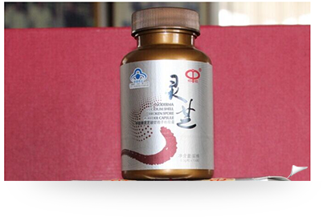
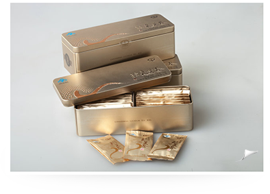
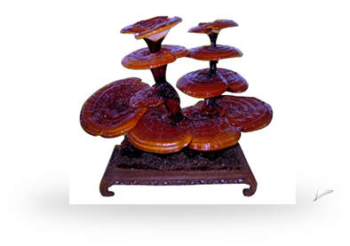

产品展示

灵芝破壁孢子粉胶囊
来自本站 | 阅读数：102
本品是以灵芝破壁孢子粉、灵芝子实体提取物为主要原料制成的保健食品，经功能试验证明，具有免疫调节的保健功能。
﹝主要原料﹞灵芝破壁孢子粉、灵芝子实体提取物
﹝功效成份及含量﹞每100g中含多糖4g
查看更多
泰山灵芝茶——金装
来自本站 | 阅读数：102
本品是以灵芝、破壁灵芝孢子粉、枸杞、贡菊、甘草等为主要原料制成的保健食品，经功能试验证明，具有免疫调节的保健功能。
﹝主要原料﹞灵芝、破壁灵芝孢子粉、枸杞、贡菊、甘草、甜蜜素、茶叶、槐米、大枣、蜂蜜
﹝保健功能﹞免疫调节
查看更多

野生灵芝切片
来自本站 | 阅读数：102
本品是以灵芝破壁孢子粉、灵芝子实体提取物为主要原料制成的保健食品，经功能试验证明，具有免疫调节的保健功能。
﹝功效成份及含量﹞每100g中含多糖4g
﹝功效成份及含量﹞每100g中含多糖4g
查看更多
灵芝盆景（大）
来自本站 | 阅读数：102
灵芝生于名山洁水丛林中，生就是灵气十足，天资香色，被誉为“仙草”，其芝盖形如云，锦纹似“如意”，柄部呈曲之状，姿态优雅，雍容华贵，典雅端庄。
灵芝文化在中国已有数千年的历史，从传说中的“炎帝娇女瑶姬思情洒泪生芝”，“轩辕神龙援芝服食”!
查看更多
